바리스타-2급 (2012-09-08 기출문제)
1과목: 커피학 개론
1. 다음 커피의 역사적 사건들을 오래 된 순서로 바르게 나열한 것을 고르시오.
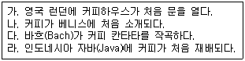
- 나-가-라-다
- 나-라-가-다
- 나-가-다-라
- 나-다-가-라
(정답률: 57%)

2. 외부로의 반출이 엄격히 통제되고 있던 상황에서 커피 묘목을 반출하여 인도네시아에서 커피를 재배함으로써 대규모 커피경작의 역사를 연 나라는?
- 포르투갈
- 프랑스
- 네덜란드
- 영국
(정답률: 80%)
3. 다음 설명 중 옳지 않은 것은?
- 아라비카 종 커피나무는 꼭두서니과의 상록 쌍떡잎식물이며, 원산지는 에티오피아의 모카지역으로 알려져 있다.
- 북위 25도와 남위 25도 사이 지역은 커피 재배에 적합하여 커피벨트, 혹은 커피 존이라고 한다.
- 콜롬비아 마일드 및 양질의 아라비카 종은 브라질과 콜롬비아를 비롯한 중남미 여러 나라에서 주로 생산된다.
- 로부스타는 병충해에 강하고 환경 적응력이 뛰어나 재배가 용이하다.
(정답률: 48%)
4. 커피 체리 속에는 일반적으로 두 개의 생두가 자라게 되어 마주보는 면은 구조상 평평한 형태를 보이는데 이런 일반적인 생두를 무엇이라고 부르나?
- 이븐 빈(Even bean)
- 커플 빈(Couple bean)
- 라운드 빈(Round bean)
- 플랫 빈(Flat bean)
(정답률: 82%)
5. 커피는 식물학적으로 크게 세 가지 종으로 나눌 수 있다. 다음은 어떤 종(種)에 대한 설명인가?
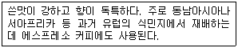
- 로부스타 종
- 아라비카 종
- 리베리카 종
- 엑셀사 종
(정답률: 69%)
6. 커피 꽃가루받이(Pollination/수분)에 대한 다음 설명 중 사실과 다른 것은?
- 아라비카 종은 주로 자가 수분(Self-pollination)을 한다.
- 아라비카 종의 개화 상태는 약 이삼일 정도이다.
- 꽃가루받이(Pollination/수분)은 주로 곤충에 의해 이루어진다.
- 강한 비, 바람은 수분을 방해하는 주된 원인이 된다.
(정답률: 67%)
7. 특정 생두에 ‘셰이드 그로운 커피(Shade-grown coffee)’라는 명칭이 붙게 되는데, 그 의미는 무엇인가?
- 작은 커피 묘목의 일조량 조절을 목적으로 그늘막을 설치하였다.
- 커피나무의 일조량을 줄이기 위해 키 큰 나무의 그늘 아래에서 경작되었다.
- 커피나무의 개량 및 다수확을 목적으로 일정기간 그늘막을 설치하였다.
- 커피종자를 삼베 포, 짚 등으로 덮어 그늘을 유지하였다.
(정답률: 72%)
8. 다음은 커피 가공방식에 대한 설명이다. ( ) 안을 올바르게 채운 것은?
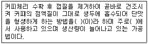
- 펄프드 내추럴, 인도네시아
- 펄프드 내추럴, 브라질
- 세미 워시드, 인도네시아
- 건식법, 브라질
(정답률: 63%)
9. 다음 중 커피종자를 개량하는 목적으로 옳게 묶은 것은?
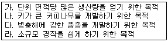
- 가, 나
- 가, 다
- 다, 라
- 나, 다
(정답률: 79%)
10. 다음 중 다른 세 나라와 커피를 분류하는 방법이 다른 국가는?
- 브라질
- 인도네시아
- 에티오피아
- 케냐
(정답률: 52%)
11. 커피 재배 농가의 삶의 질을 개선하고 수질과 토양, 생물 다양성을 보호하며 장기적인 관점에서 안정적으로 생산하는 커피를 ( )라 한다
- 유기농 커피(Organic coffee)
- 공정 무역 커피(Fair trade coffee)
- 지속가능 커피(Sustainable coffee)
- 셰이딩 커피(Shading coffee)
(정답률: 74%)
12. 다음 습식법(Wet processing)에 대한 설명 중 옳은 것은?
- 건식법에 비해 커피의 품질이 떨어진다.
- 주로 로부스타 종에 많이 사용된다.
- 단맛이 좋으며 바디가 비교적 강한 커피를 얻을 수 있다.
- 세균에 의한 발효로 산이 생성되어 pH가 3.8-4.0으로 내려간다.
(정답률: 58%)
13. SCAA 기준에 따른 결점두(Defect bean)의 발생 원인이 잘못 연결된 것은?
- Withered Bean: 발육 기간 동안 수분 공급 부족
- Black Bean: 늦은 수확, 흙과의 장시간 접촉
- Shell: 불완전한 탈곡과정
- Floater: 부적절한 보관이나 건조
(정답률: 65%)
14. 커피체리에 있는 점액질에 대한 설명으로 틀린 것은?
- 0.5-2.0mm 두께의 매우 미끄러운 물질로서 투명하고 색깔이 없다. 공기에 노출되면, 효소의 산화작용으로 갈색으로 변한다.
- 점액질은 완숙체리, 미숙체리, 과숙체리 모두에 생성되어지므로, 과육제거(Pulping) 시 필요한 윤활작용을 하여 펄핑이 쉽게 되도록 도와준다.
- 프로토펙틴(Protopectin)의 가수분해와 효소에 영향을 받아 펙틴(Pectin)의 감소로 점액질이 제거된다. 만약 습식발효가 72시간 지나면 자극적인 약품냄새가 날 수 있다.
- 펙틴(Pectins)과 당류(Sugars)로 구성되어 있다. 프로토펙틴(Protopectin)이 33%, 포도당(Glucose)과 과당(Fructose)이 30%, 자당(Sucrose)이 20%, 섬유소(Cellulose)와 회분(Ash)이 17% 들어있다.
(정답률: 45%)
15. 다음 중 커피에 대한 설명으로 바른 것은?
- 아라비카(Arabica), 카네포라(Canephora)와 같은 커피의 종(Species)은 모두아프리카에서 기원하였다.
- 커피는 통상 백(Bag)에 담겨 보관, 유통되는데 커피 생산국 모두 60kg단위의 백을 사용한다.
- 브라질에서 생산되는 커피는 모두 내추럴 커피(Natural coffee)이다.
- 결점두(Defect bean)의 종류와 명칭은 커피 생산국 모두 통일된 기준을 사용한다.
(정답률: 46%)
16. 커피 가공 방법은 크게 건식법, 펄프드 내추럴, 습식법으로 나뉜다. 2000년 이후 이 세 가지 가공 방법에 공통적으로 적용되는 공정은 무엇인가?
- 이물질 제거, 선별과정
- 펄핑과정
- 발효과정
- 점액질 제거과정
(정답률: 69%)
17. 커피 생산국마다 수확 기준 일자가 달라 통계 자료에 혼동이 있을 수 있으므로 ICO에서는 ‘Coffee year’를 정해 산정일자를 통일시키고 있다. 다음 중 ‘Coffee year’의 산정 기준 일자는?
- 1월 1일
- 4월 1일
- 7월 1일
- 10월 1일
(정답률: 74%)
18. 아라비카 종 커피의 특징에 대한 설명에 해당되지 않는 것은?
- 대체로 풍부한 신맛과 고급스런 향을 지녔다.
- 카리브 해, 중남미, 서부 아프리카 등지에서 생산된다.
- 가격이 상대적으로 고가이며, 원두커피 제조에 주로 사용된다.
- 주로 해발 800-2,000m의 고산지대에서 재배된다.
(정답률: 64%)
19. SCAA 분류법 중 Specialty grade의 등급기준에 해당하지 않는 것은?
- 350g 안에 결점수(Full defect)가 5 이내이며 프라이머리 디펙트(Primary defects)는 허용되지 않는다.
- Body, Flavor, Aroma, Acidity 등의 특성을 가지고 있어야 한다.
- 생두의 허용 함수율은 10-13%이다.
- 퀘이커(Quaker)는 로스팅 된 커피 100g 중 3개까지 허용된다.
(정답률: 71%)
20. 생두(Green bean)를 평가하는 방법 중 틀린 것은?
- 생두는 색깔과 크기가 균일할수록 좋은 등급으로 친다.
- 국가에 따라 300g 중 결점두 수에 따라 등급이 정해지기도 한다.
- 청결도(은피 제거 여부)는 가장 중요한 평가요소이다.
- 결점두 수가 적을수록 좋은 커피로 평가된다.
(정답률: 69%)
21. 아라비카의 여러 품종에 대한 다음 설명 중 잘못된 내용은 어느 것인가?
- 카투아이(Catuai)는 문도노보(Mundo Novo)와 카투라(Caturra)의 교배종이다.
- 문도노보(Mundo Novo)는 티피카(Typica)와 버번(Bourbon)의 교배종 이다.
- 티피카(Typica)는 옐로 버번(Yellow Bourbon)에서 파생된 품종이다.
- HdT(Hibrido de Timor)는 아라비카와 로부스타의 교배종이다.
(정답률: 56%)
22. 향미가 뛰어난 커피를 생산하기 위한 방법으로 올바른 것은?
- 생두의 수분을 완전히 건조하기 위해 장기간 햇볕에 건조시킨다.
- 완전히 익은 붉은색의 체리를 선별 수확한다.
- 유기농법으로 가공한다.
- 수확 후 커피체리 껍질을 반드시 제거한 다음 건조시켜야 한다.
(정답률: 74%)
23. 다음은 우유의 표면 장력을 설명한 것이다. 옳은 내용으로 연결된 것은?
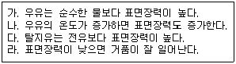
- 가, 나
- 다, 라
- 나, 다
- 가, 라
(정답률: 42%)
24. 다음 디카페인 커피에 대한 설명으로 맞는 것은?
- 우리나라에서 최초 개발되어 동결건조 방식으로 생산한다.
- 카페인은 100% 제거되나, 커피 맛과 향의 차이는 없다.
- 물 추출법, 용매추출법, 초임계 추출법 등이 있다.
- 로스팅 완료 후 물과 이산화탄소를 이용하여 가공한다.
(정답률: 72%)
25. 우유에 함유된 성분으로서, 칼슘 흡수를 촉진하는 물질은 무엇인가?
- 불포화지방산
- 유당
- 포화지방산
- 무기질
(정답률: 50%)
26. 밀크 스티밍(Steaming) 과정에서 우유의 단백질 외에 거품의 안정성에 중요한 역할을 하는 성분은?
- 칼슘
- 유당
- 인
- 지방
(정답률: 66%)
27. 다음은 커피에 함유된 폴리페놀 성분에 대한 설명이다. 틀린 것은?
- 혈중 콜레스테롤의 수치를 낮게 해주는 작용도 한다.
- 중추신경을 자극하여 정신을 맑게 한다.
- 항산화제로서 노화방지 효과가 있는 것으로 알려져 있다.
- 헬리코박터 균을 박멸하며 충치억제에도 효과가 있다.
(정답률: 72%)
28. 식기, 기구의 소독에 이용되는 ‘자외선 살균등(殺菌燈)’ 소독법에 대한 설명으로 옳은 것은?
- 대부분의 미생물 살균에 효과가 있다.
- 살균력이 가장 강한 3,500Å의 자외선을 이용한 살균 방법이다.
- 살균력은 균의 종류에 상관없이 동일하다.
- 자외선은 물질의 표면과 내부를 투과한다.
(정답률: 57%)
29. 아래의 ( )에 적합한 용어는 무엇인가?
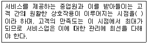
- 서비스 기대점
- 서비스 접점
- 서비스 순환점
- 서비스 시발점
(정답률: 67%)
30. 다음 커피 메뉴(1잔 기준) 중 칼로리가 가장 높은 것은?
- 화이트초콜릿 모카
- 카페라떼
- 카푸치노
- 아메리카노
(정답률: 85%)
2과목: 로스팅과 향미 평가(커피 배전)
31. 미성숙 생두가 많이 혼합되면 로스팅 단계에서 문제가 발생되며, 추출한 커피는 떫은맛이 강하고 맛이 없다. 다음 중 가장 큰 이유는 무엇인가?
- 성숙도에 따른 크기의 차이
- 성숙도에 따른 성분 구성의 차이
- 성숙도에 따른 타닌 함량의 차이
- 성숙도에 따른 카페인 함량의 차이
(정답률: 54%)
32. 로스팅 작업의 시간경과에 따라 생두의 색변화가 발생한다. 이러한 일련의 변화를 옳은 순서로 나열한 것은?
- 녹색(Green)→노란색(Yellow)→밝은 갈색(Light brown)→갈색(Medium brown)→짙은 갈색(Dark brown)→검은색(Dark)
- 녹색(Green)→밝은 갈색(Light brown)→노란색(Yellow)→갈색(Medium brown)→짙은 갈색(Dark brown)→검은색(Dark)
- 녹색(Green)→밝은 갈색 (Light brown)→노란색(Yellow)→짙은 갈색(Dark brown)→갈색(Medium brown)→검은색(Dark)
- 녹색(Green)→노란색(Yellow)→갈색(Medium brown)→밝은 갈색(Light brown)→짙은 갈색(Dark brown)→검은색(Dark)
(정답률: 77%)
33. 다음은 로스팅 과정에서 발생되는 현상이다. ( )안에 들어갈 알맞은 용어를 바르게 나열한 것은?
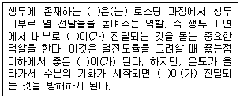
- 열–전도체–열 - 수분
- 수분–열 –전도체 - 열
- 열–열–전도체 - 수분
- 열 –수분–전도체 - 열
(정답률: 75%)
34. 일부 로스팅 머신에 부착된 댐퍼(Damper)의 기능으로 볼 수 없는 것은?
- 드럼 내부의 공기 흐름을 조절하는 기능
- 드럼 내부의 열량을 조절하는 기능
- 은피를 배출하는 기능
- 흡열과 발열 반응을 조절하는 기능
(정답률: 53%)
35. 커피 로스팅의 기본적인 세 단계에 속하지 않는 것은?
- 건조(Dry)
- 열분해(Pyrolysis)
- 냉각(Cooling)
- 포장(Packing)
(정답률: 77%)
36. 커피 로스팅 시 생두에 가해지는 열원의 형태에 따라 로스팅의 진행이 달라진다. 생두에 열을 전달하는 열원의 종류에 해당하지 않는 것은?
- 대류에 의한 열
- 복사에 의한 열
- 전도에 의한 열
- 자외선에 의한 열
(정답률: 74%)
37. 다음 중 커피 색상의 변화에 영향을 미치지 않는 것은?
- 클로로겐산
- 카페인
- 멜라노이딘
- 캐러멜
(정답률: 66%)
38. 커피를 로스팅 할 때 일어나는 성분의 양적 변화가 가장 적은 것은?
- Caffeine
- Free sugar
- Chlorogenic acid
- Trigonelline
(정답률: 64%)
39. 커피 추출액 중 가장 많이 함유되어 있는 무기질 성분은?
- P(인)
- K(칼륨)
- Na(나트륨)
- Ca(칼슘)
(정답률: 62%)
40. 로스팅 시 맛 성분의 변화에 대한 설명으로 옳은 것은?
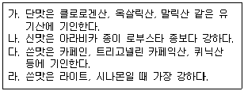
- 가, 나
- 가, 라
- 나, 다
- 다, 라
(정답률: 63%)
41. 다음 원두의 갈색 색소 형성에 대한 설명으로 틀린 것은?
- 생두에 함유된 자당의 캐러멜화에 의한 것이다.
- 아미노산과 환원당 간의 마이야르 반응에 의한 것이다.
- 갈색색소는 저분자 물질로 구성되어 있다.
- 클로로겐산이 단백질 및 다당류와 반응하여 갈색 색소를 형성한다.
(정답률: 59%)
42. 다음 커피 향미 성분 중 로스팅 과정 중에 생성되는 향이 아닌 것은?
- Nutty
- Caramelly
- Fruity
- Chocolaty
(정답률: 40%)
43. 다음에 설명에서 ( )안에 들어갈 단어를 바르게 연결한 것은?
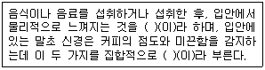
- Mouthfeel, Body
- Flavor, Aftertaste
- Aftertaste, Mouthfeel
- Mouthfeel, Flavor
(정답률: 66%)
44. 커피를 너무 짧은 시간 로스팅 해서, 당과 탄소화합물이 정상적으로 생성되지 않았을 때 나타나는 맛의 결함은?
- Rubbery
- Green
- Scorched
- Baked
(정답률: 48%)
45. 로스팅에 의한 원두의 물리적 변화 중 로스팅이 진행됨에 따라 값이 증가하지 않는 것은?
- 휘발성 성분
- 가용성 성분
- 부피
- 밀도
(정답률: 50%)
3과목: 커피 추출
46. 커피를 추출 할 때 향미에 가장 적게 영향을 주는 것은?
- 원두의 로스팅 정도
- 분쇄된 커피의 양과 추출 시 사용되는 물의 비율
- 추출 시 사용한 물의 품질과 온도
- 커피를 마시는 사람의 기호도
(정답률: 75%)
47. 커피를 추출하기 위해 분쇄하는 이유로 가장 적절한 것은?
- 물에 접촉되는 커피 표면적의 증가
- 짧은 시간에 효율적인 서비스
- 커피 성분의 최대한 추출
- 원가 절감
(정답률: 64%)
48. SCAA에 따른 커피 추출 때 적정 추출수율과 적정 커피농도를 올바르게 짝지은 것은?
- 10-15%와 2.0-2.5%
- 12-16%와 4.0-4.5%
- 18-22%와 1.0-1.5%
- 25-30%와 3.0-3.5%
(정답률: 66%)
49. 다음은 커피 추출액의 TDS 수치에 대한 단위 해설이다. 가장 알맞은 내용은?
- 샘플 추출한 커피 내의 무기물질의 함유량을 말한다.
- 샘플 추출한 커피의 염류 함유량을 말한다.
- 샘플 추출한 커피 내의 수용액 중의 가용성 고형분의 총양을 말한다.
- 샘플 추출한 커피 내의 산의 농도를 말한다.
(정답률: 57%)
50. 다음 중 에스프레소 추출 시 추출 속도를 결정하는 가장 큰 요인은?
- 커피의 분쇄도
- 커피의 로스팅 정도
- 그라인더 칼날의 종류
- 머신의 청결 상태
(정답률: 74%)
51. 다음은 커피를 추출하는 물에 대한 내용이다. 바르게 설명된 것은?
- 물에 녹아 있는 철이나 동 같은 금속성분은 커피의 맛을 풍부하게 해준다.
- 경도가 높은 물에 녹아 있는 칼슘염, 수돗물에 소독제로 들어 있는 염소는 커피의 성분과 반응하여 맛과 향기를 한층 더해준다.
- 칼슘염은 유기산과 결합하여 커피의 단맛을 더해준다.
- 카페에서 수돗물을 추출기에 직접 연결하여 쓸 때는 반드시 중간에 정수와 연수 장치를 연결하여 염소, 유기물, 칼슘 등을 제거한다.
(정답률: 75%)
52. 연수기는 주기적으로 청소를 해야 하는데, 이 때 사용하는 것은?
- 소금
- 우유
- 식초
- 뜨거운 물
(정답률: 64%)
53. 커피 머신의 포타필터(Portafilter) 보관 방법 중 적당한 것은?
- 그룹에 장착한 상태로 보관한다.
- 기계 위에 올려놓는다.
- 컵 받침대에 그냥 둔다.
- 깨끗한 테이블 위에 올려놓는다.
(정답률: 77%)
54. 커피 추출 시 프리인퓨전(Pre-Infusion)을 가장 잘 설명한 것은?
- 추출이 용이하게 미리 침투와 용해가 진행되도록 하는 과정을 말한다.
- 커피에 물이 확산되는 것을 말한다.
- 커피 추출 시 이루어지는 물의 흐름 전 과정을 의미하는 통칭이다.
- 커피 추출 시 물이 외부에서 내부로 흘러 들어가는 물의 확산 경로를 의미하는 것이다.
(정답률: 50%)
55. 다음 설명에 해당하는 추출 기구는 무엇인가?
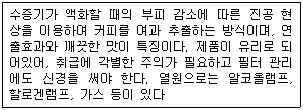
- 모카 포트
- 배큐엄브루어(사이폰)
- 퍼컬레이터
- 프렌치 프레스
(정답률: 66%)
56. 분쇄된 커피를 필터 홀더에 담는 일련의 과정을 패킹(Packing)이라 하는데, 이 과정과 관련이 없는 것은?
- Tapping
- Dosing
- Tamping
- Infusion
(정답률: 61%)
57. 에스프레소 추출 시 물 흘리기를 하지 않을 경우 나타날 수 있는 현상은?
- 굳이 하지 않아도 커피의 향미에는 아무런 변화가 없다.
- 추출량이 많아지면 크레마가 옅은 갈색으로 나오며 향이 적고 산미가 강하다.
- 열수에 의해 커피에서 톡 쏘는 자극적인 맛이 날 수 있다.
- 에스프레소 맛이 마일드해지며 달콤한 향이 난다.
(정답률: 60%)
58. 다음에서 설명하는 것은 에스프레소 머신의 어느 부품인가?
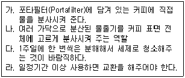
- 샤워 홀더(Diffuser)
- 플로우 미터(Flow Meter)
- 개스킷(Gasket)
- 샤워 스크린(Dispersion Screen)
(정답률: 51%)
59. 다음 중 우유가 들어가지 않은 커피 메뉴는 무엇인가?
- 에스프레소 마끼아또
- 카페라떼
- 카페프레도
- 카페모카
(정답률: 63%)
60. 다음 (사)한국커피협회 주관 바리스타 2급 실기 시험 규정 중 불합격 항목은 어느 것인가?
- 에스프레소 서빙 과정 중에 커피 스푼을 떨어뜨렸을 경우
- 예열 물을 담은 스팀 피처를 머신상부에 올려놓은 경우
- 수험생이 그라인더 입자를 조절하여 카푸치노를 추출한 경우
- 에스프레소 추출양이 15ml, 추출 시간 15초 일 경우
(정답률: 69%)
2. 가: 커피의 유행과 섭취 방식의 변화
3. 라: 커피 산업의 발전과 세계화
4. 다: 현재 커피 문화의 다양성과 발전
"나-가-라-다"는 커피의 역사적 배경에서부터 현재까지의 발전 과정을 시간순으로 나열한 것이다.